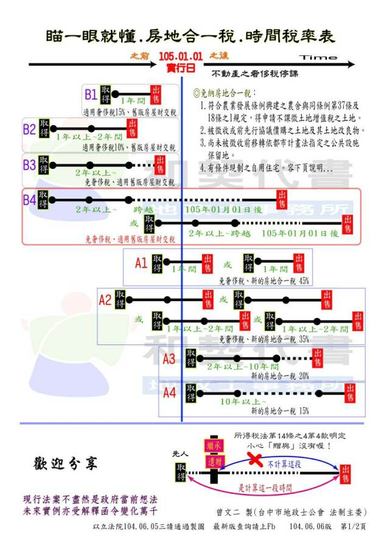

官方公告
立院通過房地合一稅制改革稅法修正草案針對立法院今（5）日三讀通過的「所得稅法」及「特種貨物及勞務稅條例」部分修正條文，使房地合一稅制有所依據，行政院發言人孫立群表示，毛院長感謝立法院王金平院長協調議事的辛勞，也感謝立法院及社會各界的大力支持。
孫發言人表示，房地合一稅制是我國稅制修正的里程碑，除可落實居住正義，也有助稅制及社會資源分配合理化，以及穩定金融的效果。毛院長已責請財政部儘速修訂相關子法規，並積極進行後續稽徵作業規劃，以利該制順利於明（105）年1月1日上路。
孫發言人指出，為落實居住正義，房地合一稅制實施，有助稅制公平性及長期房市恢復常態，而房地合一稅制增加的稅收，透過預算程序，除用於住宅政策，對於行政院希望推動的長期照顧保險制度而言，也是非常重要的財源。
孫發言人進一步指出，今天通過的修正條文經立法院朝野黨團協商，除增(修)訂下列規定外，均照行政院版本通過：
一、為免個人因調職、非自願離職或其他非自願性因素，出售持有期間在2年以內之房屋、土地，及個人以自有土地與營利事業合作興建房屋，自土地取得之日起算2年內興建完成並銷售該房屋、土地者，其所得適用20%稅率。
二、繼承或受遺贈取得之房屋、土地，繼承人或受遺贈人出售該房屋、土地，得將被繼承人或遺贈人持有期間合併計算。
三、本修法案之稅課收入用途，修正為用於住宅政策及長期照顧服務支出。
 < 返回列表地址：10580台北市南京東路四段150號2樓 電話：02-25780880#233 傳真：02-25786600
Copyright @ National Chinese Association for Urban Renewal
IE8.0 & Firefox 3.0 以上版本瀏覽器